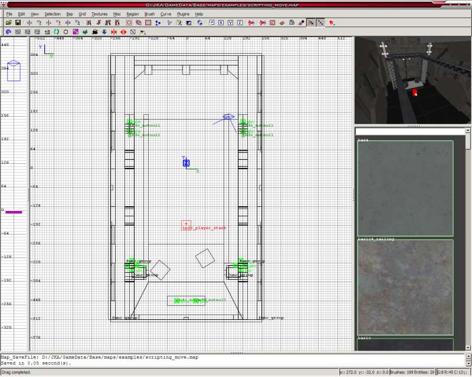
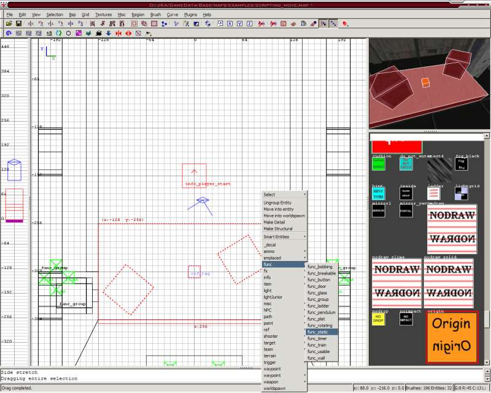
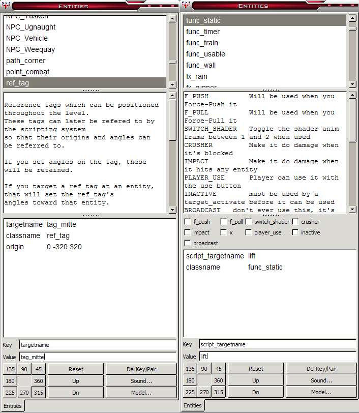
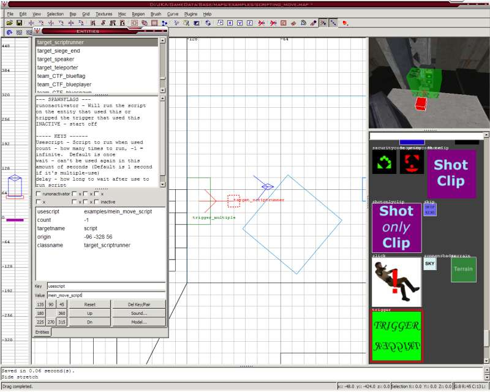
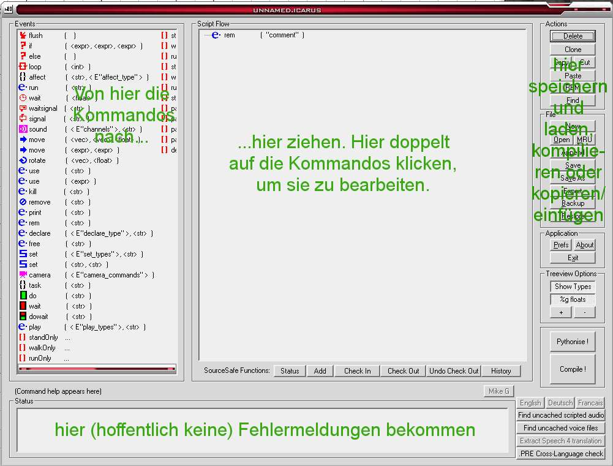
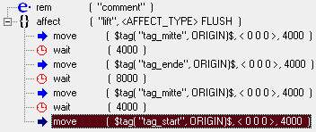

>> Mapping Academy - Tutorials <<
(c) 2006 www.darth-arth.de
Brushes via Script bewegen
VORRAUSSETZUNGEN:
>> Tutorial Scripting - Installation BehavEd (Script-Editor) (hier)
>> Tutorial Mein erster Raum (hier)
In dieser Lehreinheit (Tutorial) Lernen wir, einen Lift auf Knopfdruck erst in eine, dann in eine andere Richtung und wieder zurückfahren zu lassen, bzw. Brushes mit Hilfe eines Scripts zu bewegen.
Dieses Tutorial beschäftigt sich mit dem Bewegen von Brushes mithilfe von Scripts.
Damit wir einen Brush via Script bewegen können, müssen wir erstmal einen haben. Also erstellen wir einen kleinen Raum mit einem Lift, der nach oben und dann nach vorne fahren soll, sobald man einen Knopf drückt, und einem Info_player_start:

Damit wir diesen Brush vom Script aus bewegen können, müssen wir ihn in ein Entity tun. Es funktionieren die meisten `func_****`s, aber da wir im Moment keine besonderen Eigenschaften wie z.B. Zerstörbarkeit wollen, nehmen wir einen func_static, der eigentlich nichts tut.
Dieser braucht einen Brush mit der Textur system/origin, der als Mittelpunkt dient. Den fügen wir hinzu, wählen alle Brushes des Lifts und den Origin-Brush aus und machen Rechtsklick->Func_->Func_Static.
Außerdem brauchen wir noch ref_tag's, das sind die Positionen zu denen der Lift nachher fährt. Da es drei Positionen sind (Startposition, Übergangsposition und Enposition), brauchen wir auch drei ref_tags.
Der erste kommt an die gleiche Position wie der Origin-Brush des Lifts, der zweite an die Stelle, wo der Lift abbiegen soll, und der dritte an die Endposition des Origin-Brushes:

Falls nötig, könnt ihr den Func_static kopieren, um zu sehen, wo ihr die ref_tags platzieren müsst.
Löscht die Kopien aber hinterher wieder.
Damit wir die ref_tag's und den func_static vom Script aus auch "ansprechen" können, müssen wir ihnen noch Namen geben. Beim ref_tag geht das im Entitymenü (N) mit targetname, beim func_static mit script_targetname.
Geben wir dem func_static den Namen "Lift" und den drei ref_tag's die Namen "tag_start", "tag_mitte" und "tag_ende":

Wir könnten dem Lift noch ein Soundset geben, z.B. soundset platform.
Jetzt fehlen nur noch eine Konsole zum Starten des Lifts und natürlich das Script selber.
Erstmal die Konsole: Wir nehmen einen Brush mit einer Konsolentextur, und tun einen trigger_multiple (Brush mit System/Trigger Textur -> Rechtsklick -> trigger_ -> trigger_multiple) davor, den wir wie folgt einstellen (N):
- Je ein Häkchen bei "player_use" und "facing" (damit man den "Benutzen" Knopf drücken und dabei in die richtige Richtung sehen muss)
- wait - 20 (damit man das Script nicht nochmal ausführen kann, ehe der Lift fertig ist)
- target - script (das wird beim Benutzen des Triggers benutzt)
- unten links bei den Zahlen (0, 45, 90 usw.) diejenige anklicken, die in die Richtung zeigt, in die man gucken müssen soll, also die, in die, vom Trigger aus gesehen, die Konsole liegt (aus der Vogelperspektive) (das wird von "facing" benötigt)
Jetzt fehlt nur noch ein target_scriptrunner (nichts anklicken (ESC) -> Rechtsklick -> target_ -> target_scriptrunner), den wir so einstellen:
targetname - script (heißt, dass er benutzt wird, wenn der Trigger_multiple ausgelöst wird)
count - -1 (damit er unendlich (= -1) Mal benutzt werden kann)
usescript - mein_move_script (Das ist das Script, das bei Benutzung ausgeführt wird (ausgehend von "JKA/GameData/Base/Scripts"))

So, jetzt können wir schon kompilieren. "Bsp -meta" reicht, wenn ihr Lichter eingebaut habt, könnt ihr noch "bsp -ligt -fast" dazu nehmen.
Nun zum Script:
Zuerst starten wir BehavEd (habt ihr warscheinlich schon... Ich auch xD).
Anmerkung: BehavEd für JKA ist beim JKA SDK dabei. (Link1, Link2)
Das Fenster müsstet ihr ja eigentlich schon aus dem BehavEd Einrichten Tutorial kennen. Hier noch ein kleiner Auffrischungskurs:

Also, dann zieht mal zuerst das Kommando "affect" ins Script. Damit sagen wir, dass das Script nicht auf den Scriptrunner, sondern ein angegebenes Entity ausgeführt wird. Welches, müssen wir jetzt eingeben: Bearbeitet das affect und ersetzt das "DEFAULT" durch ein "lift", da wir ja den Lift (wir erinnern uns: mit dem script_targetname "lift") bewegen wollen.
Dann ziehen wir ein "move (vec vec float)" in das affect. Mit dem Move Kommando bewegt man Entity. Wohin, stellen wir jetzt ein:
Erst klicken wir neben dem Eingabefeld links auf "Expr!", damit erweiterte Kommandos angezeigt werden, danach auf "Tag", da der Lift zu einem ref_tag fahren soll. Anschließend ersetzen wir das "targetname" durch ein "tag_mitte", und ändern letztendlich im Eingabefeld rechts die 1000 (Millisekunden, = eine Sekunde) in eine 4000 um, womit wir eingestellt haben, dass der Lift in vier Sekunden zum mittleren Tag fährt.
Vor dem nächsten Move Kommando müssen wir nun noch ein "wait (float)" Kommando einbauen, weil das Script nicht von alleine wartet, bis das Move Kommando ausgeführt ist. Hier stellen wir wieder 4000 ein.
Dann kopieren wir die beiden Kommandos (mehrere Kommandos anklicken: strg+LMB (left mouse button = linke Maustaste)) und fügen sie 3 mal ein: ein mal für die Fahrt zum Endpunkt, und über den Mittelpunkt wieder zurück zum Startpunkt.
Nun müssen wir nur noch die Tag-Namen anpassen, und den zweiten wait Wert ändern, damit der Lift am Endpunkt länger wartet.
Den letzten wait können wir löschen, da danach nichts mehr passiert.
Wir müssen aber aufpassen, das die Zeit insgesamt (in meinem Fall 4 + 8 + 4 + 4 = 20) die oben festgelegten 20 Sekunden wait des trigger_multiples nicht überschreitet, und müssen zur Not die Map anpassen.

Achja: Das rem("comment"); ist ein Kommentar, da können wir z.B. reinschreiben was das Script tut.
Danach müssen wir das Script natürlich speichern.
Wir klicken auf Save, und speichern es im Ordner JKA/GameData/Base/Scripts (Zur Not Scripts erstellen) unter dem Namen ab, den wir oben beim target_scriptrunner eingestellt haben, also mein_move_script.
Jetzt nur noch unten rechts auf "Compile" klicken, und wir können testen: Wir starten Jedi Academy (oder den Jedi Outkast im SinglePlayer) und geben in die Konsole (shift + ^ (links neben 1)) ein:
sv_pure 0 (damit auch dateien (unser Script), die nicht in pk3 dateien sind, geladen werden)
map mapname (wobei mapname natürlich der Name ist, den wir der Map gegeben haben)
Und schon haben wir einen tollen Lift, der hoch und nach vorne Fährt.
mfG Mr. Wonko
Download der Sourcefiles: Download
Alle Bilder, Texte, Grafiken, wenn nicht anders gekennzeichnet:
© 2000 - 2006 (Artur L.) www.darth-arth.de
Nur zur privaten Nutzung. Kopieren nicht gestattet. Darth-Arth.De
ist ausdrücklich nicht für den Inhalt externer Seiten verantwortlich. Es gelten
die angegebenen Nutzungsbedingungen.